Know Thyself: Cancers of Each Organ System
Nervous System Cancers
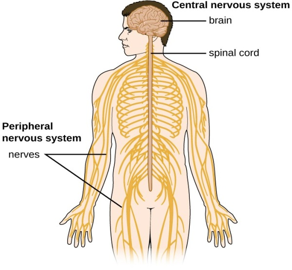Source: SUNY SOER services
The Nervous system consists of two major systems: the Central Nervous System (CNS) that is made of the Brain and Spine, and the Peripheral Nervous System (PNS) that is made of the nerves that extend from the brain and spine. The functional unit of the nervous system is a neuron, a fascinatingly complex tree shaped cell that helps transmit electrical and chemical signals. Neurons are incredibly unique and specialized cells, existing only to transmit signals. Because of this, neurons need other cells to support them and keep them alive. These caretaker cells are called Glial cells, and are responsible for an incredibly vast number of functions, ranging from creating the blood brain barrier, to secreting brain fluid (cerebrospinal fluid, a.k.a CSF), to wrapping neurons in an insulating barrier of fat to optimize electrical conduction.
What is cancer of the Nervous System?
Despite being the functional unit of the nervous system, neurons themselves rarely become cancerous. Instead, it is the previously mentioned Glial cells (a.k.a the neuron’s caretakers) that mutate to become cancerous. Some of the most common tumors within the nervous system arise from Glial cells, aptly named Gliomas. However, the most common form of brain cancer is the Meningioma, where the cells that make the meninges (protective layer between the brain and the skull - like a cushion for the brain) become cancerous.
What are the symptoms of Nervous System Cancer?
Cancers of the nervous system often present with issues related to thinking, balance, pain, and muscle contraction. The most common symptoms of nervous system cancer include, but are not limited to: persistent headaches, vision / hearing / concentration issues, brain fog, loss of balance or coordination, seizures, changes in personality, pain / tingling / numbness, and finding a palpable lump.
What can be done to prevent cancers of the Nervous System?
The only known lifestyle or environmental factor that contributes to nervous system cancers is radiation. Limiting exposure to radiation, particularly for children, will reduce your chances of developing a cancer of the nervous system. On top of this, avoiding carcinogens in general is never a bad idea.
Gastrointestinal System
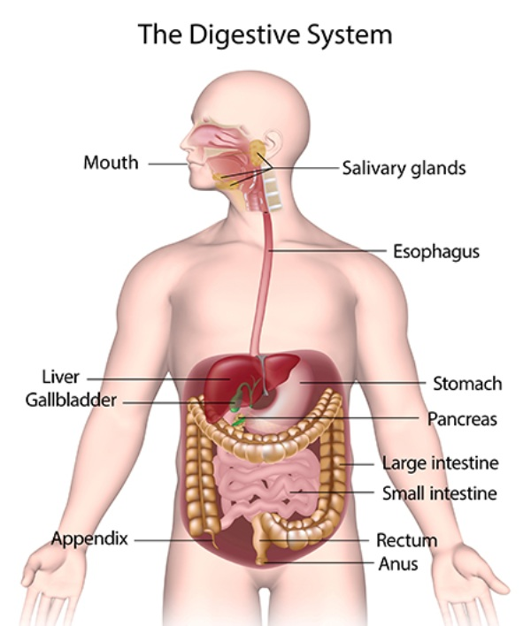Source: National Institute of Diabetes and Digestive and Kidney Diseases
The Gastrointestinal (GI) system, also called the digestive system, is the organ system that is responsible for turning food into usable energy. The GI system consists of many individual organs, including the mouth, esophagus (throat), stomach, small intestine, large intestine (colon), rectum, and anus. Colon cancer alone is the second leading cause of cancer related mortality in the United States. Thus, it is incredibly important to understand what GI cancer is, what the symptoms of GI cancer look like, and what you can do to minimize your risks of getting GI cancer.
What is GI cancer and what are the most common types?
Gastrointestinal cancer is any cancer that originates from tissues found within the digestive system, ranging from the mouth to the anus and everything in between. However, the most common form of cancer within the GI system is within the colon and anus. Almost 95% of colorectal cancers are Adenocarcinomas. Adenocarcinomas are cancers that arise from glandular cells, which are cells that secrete something. In this case, the ‘Adeno’ refers to the mucus secreting cells of the colon. However, many other forms of GI cancer exist, such as Squamous Cell Carcinoma (prevalent in the mouth and esophagus), Gastric Adenocarcinoma (stomach), Gastrointestinal Neuroendocrine Tumor (small intestine), and many others.
What are the symptoms of GI cancer?
The symptoms of GI cancer are vast, but most often include a mix of the following symptoms: fatigue, weight loss, indigestion, acid reflux (a.k.a heartburn), nausea, vomiting, significant change in bowel movement frequency, change in stool shape (such as pencil thin stool), blood in stool, and rectal bleeding.
What can I do to prevent GI cancer?
In order to minimize the chances of getting GI cancer, a healthy gut is paramount. Making sure to eat a balanced diet of veggies, fruits, and other fiber rich foods is incredibly important in preventing GI cancer. At first, this may seem tangential; why would eating fruits and veggies impact cancer? Well, you may have heard of the gut microbiome before; essentially, the stomach and intestines are lined with bacteria that help break down our food. Fiber helps beneficial bacteria grow within the GI system, which in turn provides us with chemicals that reduce GI inflammation and the risk of GI cancer. Essentially, fiber makes bacteria poop, which helps prevent cancer!
Additionally, minimizing your consumption of products with high levels of carcinogens (namely alcohol and tobacco products, but also some processed foods) helps to reduce the chance of colorectal cancer. For more information on what foods to prioritize and which to avoid, visit the Canadian Society of Intestinal Research: https://badgut.org/information-centre/health-nutrition/nutrition-and-stomach-cancer/
Pulmonary System
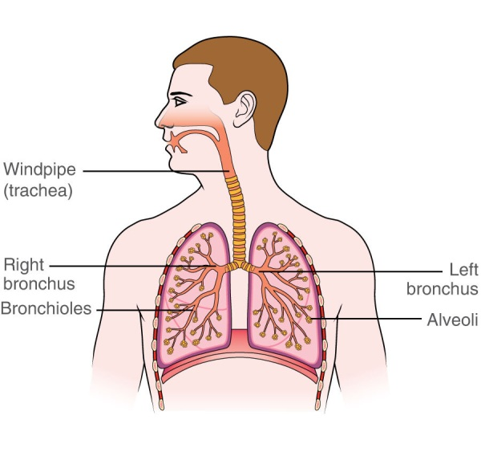Source: Macmillan Cancer Support
The pulmonary system is the organ system that provides the body with oxygen. The pulmonary system consists of the mouth, pharynx (throat), larynx (the voice box), the trachea (windpipe), and the lungs. Lung cancer alone is the leading cause of cancer related mortality in the United States, accounting for 1 in 5 deaths. Thus, it is paramount to understand what lung cancer is, what the symptoms of lung cancer look like, and how you reduce your risk of getting lung cancer.
What is lung cancer and what are the common types?
Lung cancer can be classified as either being small cell lung cancer (SCLC) or non-small cell lung cancer (NSCLC). These names are not particularly intuitive, as they come from how the cancerous cells look under a microscope: small cell lung cancers are small and round, while non-small cell lung cancers are larger and more varied. Small Cell Lung Cancer is an incredibly aggressive and fast growing type of lung cancer that has often metastasized (spread to other tissues), though Small Cell Lung Cancer only accounts for about 10-15% of all lung cancers. On the other hand, Non-Small Cell Lung Cancer is a slower spreading cancer that accounts for 85-90% of all lung cancers.
What are the symptoms of lung cancer?
The symptoms of lung cancer are not dissimilar to a bad respiratory infection. The most common symptoms of lung cancer include: a persistent cough that worsens over time, difficulty breathing, coughing up blood, persistent pain in the chest/rib/back/pelvis region, fatigue, voice hoarseness, and a high pitch wheezing noise when breathing.
What can be done to prevent lung cancer?
The single greatest action you can do to prevent lung cancer is to stop smoking. According to the American Cancer Society, anywhere from 80-90% of all lung cancer incidence is related to smoking. This is an absolutely staggering number of cases, meaning that stopping tobacco consumption (particularly cigarettes) is the single most important thing you can do to prevent lung cancer. Even if you are currently smoking, quitting now immediately reduces your chances of getting lung cancer, on top of the other various health benefits associated with quitting smoking. According to recent research, even if you have been smoking, quitting smoking for a period of 5 years reduces your chances of getting lung cancer by almost 80%. Research does indicate that, out of all smoking forms (cigarettes, vaping, marijuana, pipes, etc.) smoking cigarettes seems to increase the chance of lung cancer the most, though more research is needed to evaluate the extent to which marijuana and vaping contribute to lung cancer. However, ALL forms of smoking increase your chances of getting cancer. If you don’t currently smoke, then being mindful of air quality, avoiding secondhand smoke as much as possible, and maintaining a healthy diet and active lifestyle are the best ways to prevent lung cancer.
Breast
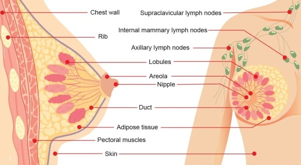Source: Dr. Mary Ling - Breast & General Surgeon
Breast cancer is any cancer arising from soft tissues found within and around the chest region. Breast cancer is the second most fatal cancer in women in the United States, partially due to its prevalence. Though uncommon, breast cancer can actually be present in men too. Understanding breast cancer, its symptoms, and what increases your chances of getting breast cancer is incredibly important in reducing the chances of breast cancer mortality.
What is breast cancer and what are the common types?
Breast cancer is often composed of cells that produce milk. The breast contains two unique tissues: milk producing tissues and adipose (fat) tissue that surrounds the milk producing tissues. Milk producing tissues include:
- Lobules, which are glands that produce milk.
- Lobes, which are collecting ducts for milk.
- Ducts, which are tubes that drain milk to the nipple.
Often, breast cancer arises from these milk producing tissues, with the two most common types of breast cancer being ductal carcinoma and lobular carcinoma. Ductal carcinoma is a cancer originating in the tissues that make up the ducts that transport milk. Similarly, Lobular carcinoma is a cancer that originates in the lobules, the milk producing glands. Ductal or Lobular carcinoma is said to be “in situ” (latin for “in place”) when the cancer has not spread outside of the duct to other parts of the breast. However, if the cancer spreads outside of its original location, it is termed “invasive.” For example, a Ductal Carcinoma in situ is a tumor in the milk ducts, while a Invasive Lobular Carcinoma is a cancer that originated in the lobules but has spread to other parts of the breast.
What are the symptoms of breast cancer?
Often, breast cancer is initially found as a strange new lump within a woman’s breast. These lumps may be solid, squishy, tender / painful, and may have irregular edges. Unfortunately, there is no algorithm for discerning between a breast lobe and a tumor, but you know your body best. If you feel a lump that concerns you, it is paramount that you get that checked out. If you or a loved one are struggling to afford screenings, this website provides a variety of free or greatly reduced cost screening opportunities in the Screening and Diagnosis section. Other than a palpable lump, symptoms of breast cancer may also include: irregular or bloody nipple discharge, soreness / tenderness of the nipple, swelling / redness of the breast, swelling / tenderness of the armpit, fatigue and weight loss, changes in skin texture on or around the breast, and bone pain.
What can be done to reduce the risk of breast cancer?
Often, breast cancer arises from these milk producing tissues, with the two most common types of breast cancer being ductal carcinoma and lobular carcinoma. Ductal carcinoma is a cancer originating in the tissues that make up the ducts that transport milk. Similarly, Lobular carcinoma is a cancer that originates in the lobules, the milk producing glands. Ductal or Lobular carcinoma is said to be “in situ” (latin for “in place”) when the cancer has not spread outside of the duct to other parts of the breast. However, if the cancer spreads outside of its original location, it is termed “invasive.” For example, a Ductal Carcinoma in situ is a tumor in the milk ducts, while a Invasive Lobular Carcinoma is a cancer that originated in the lobules but has spread to other parts of the breast.
The most relevant behavioral changes that can be made to reduce breast cancer include reducing alcohol consumption, reducing smoking, and increasing physical activity. Additionally, breast cancer can be genetic, with some mutations (like BRCA1&2, CHEK2, TP53, and others) massively increasing the risk of breast cancer. If you have a family history of breast cancer, genetic testing can be a powerful tool in understanding your personal risks for breast cancer. Finally, while not outright preventing cancer, staying on top of mammograms is the single best thing you or a loved one can do in order to minimize the impact of breast cancer. Again, if you or a loved one are struggling to afford screenings, this website provides a variety of free or greatly reduced cost screening opportunities in the Screening and Diagnosis section.
Liver
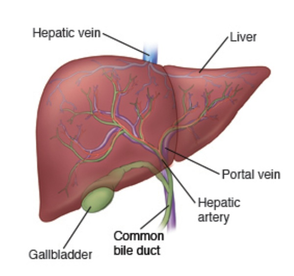Source: Stanford Medicine Children's Health
The liver is the second largest organ in the body, and is responsible for eliminating toxins in the body, producing bile used in digestion, immune system functionality, and many other important responsibilities. The functional unit of the liver is the hepatocyte, large cells that make up over 80% of the liver’s mass.
Primary liver cancer (primary meaning cancer that originated within a specific organ system, in this case the liver) is rare, accounting for less than 1% of all cancers, according to Hillman Cancer Center. Secondary metastatic liver cancer (secondary meaning another primary cancer spread to this organ) is the most common form of liver cancer, in which another cancer spreads to the liver.
What is Liver Cancer and what are the most common types?
Primary liver cancer can be divided into two main types according to the liver’s two main functions within the body: Hepatocellular Carcinoma and Cholangiocarcinoma. Hepatocellular Carcinoma is a cancer arising from the hepatocytes, and is the most common form of primary liver cancer. Cholangiocarcinomas are cancers that arise from the bile ducts that drain bile, and are very rare (impacting less than 20,000 people annually) albeit quite aggressive.
What are the symptoms of Liver cancer?
Liver cancers generally lead to the partial disruption of the liver’s main functions. Many of the symptoms associated with liver cancer result from a disruption of the liver’s functions, and include, but are not limited to: yellowing of the skin and eyes (called jaundice), abnormal bloating, fatigue and weight loss, nausea / vomiting, upper abdominal pain, abnormally dark urine, prolonged fever, and altered bowel habits (like diarrhea or constipation).
What can be done to prevent liver cancer?
The leading cause of primary liver cancer comes from a chronic infection with the Hepatitis B or Hepatitis C virus. These viruses cause chronic liver inflammation (called hepatitis), which significantly increases the risk of liver cancer. Thus, the best thing that can be done to prevent liver cancer is to get vaccinated against hepatitis. If you need free or low cost vaccinations, the Florida Department of Health Florida Viral Hepatitis and Response Program offers free or low cost hepatitis vaccinations. A link to this website can be found in the Screening and Diagnosis section of this website.
In addition to vaccination, reducing alcohol intake and reducing excess body fat are the two best ways to prevent primary liver cancer.
Pancreas
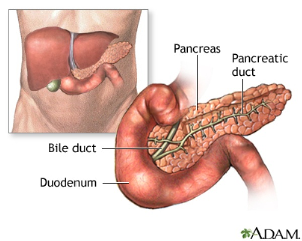Pancreatic cancer is the third leading cause of cancer related death in the United States. The pancreas is a small, leaf shaped organ nestled next to the liver and small intestine. The pancreas is responsible for regulating blood sugar, breaking down food, and maintaining blood pH balance. The pancreas is one of the few organs that is both an endocrine and exocrine organ. An endocrine organ is an organ that secretes a substance (often hormones) directly into the bloodstream, and is a part of the endocrine system, while an exocrine organ is any organ that secretes something (like sweat, milk, digestive enzymes, etc.) through the use of ducts. The endocrine pancreas is responsible for secreting a variety of hormones, such as Insulin (tells cells to intake sugar for energy), glucagon (stimulates the liver to release sugars), and somatostatin (inhibits hormones involved in digestion and cell growth) to name a few. The exocrine pancreas is responsible for secreting digestive fluids into the duodenum, or the first section of the small intestine. These digestive fluids contain enzymes that break down food, chemicals that neutralize stomach acid, water, among other compounds.
What is pancreatic cancer and what are the common types?
Pancreatic cancers can be bunched into two main groups according to their relationship to the pancreas’s functions: exocrine and endocrine. Exocrine pancreatic cancers involve pancreatic cells that are responsible for producing digestive fluids. Exocrine cancers are the most prevalent form of pancreatic cancer. The most common form of exocrine pancreatic cancer are Ductal Adenocarcinomas, making up 85-90% of all exocrine pancreatic cancers. Ductal adenocarcinoma arises from cells that line the ducts of the pancreas and secrete digestive fluids. On the other hand, malignancies of the endocrine pancreas are made of cells responsible for secreting hormones, called islet cells. These islet cell carcinomas disrupt the amount of hormones secreted by the endocrine pancreas, leading to an overabundance or lack of important hormones, like insulin, glucagon, or somatostatin.
What are the symptoms of pancreatic cancer?
Early stages of pancreatic cancer are often asymptomatic, making this cancer particularly hard to catch. However, there are some general symptoms to look out for, including: unexplained onset of diabetes, weight loss, fatigue, and abdominal pain. Pancreatic cancers often spread to the liver, leading to yellowing of the eyes and skin (jaundice), unexplainably dark urine, changes in bowel habits (like diarrhea or constipation), and abdominal pain.
What can be done to prevent pancreatic cancer?
The factors that increase the risk of pancreatic cancer are very similar to the factors that increase the risk of GI cancer. Risk factors for pancreatic cancer include: obesity, smoking, alcohol consumption, low fiber intake, and a high processed meat diet. Thus, in order to minimize one’s risk of pancreatic cancer, one should: reduce alcohol intake, reduce / quit smoking, increase fiber intake, reduce processed meat consumption, and lose excess weight. Now of course, these are not always 100% doable. But no matter what, any action you take towards reducing your risk factors is a step you should be proud of, even if it's losing just one drink or one smoke per night.
Endocrine System
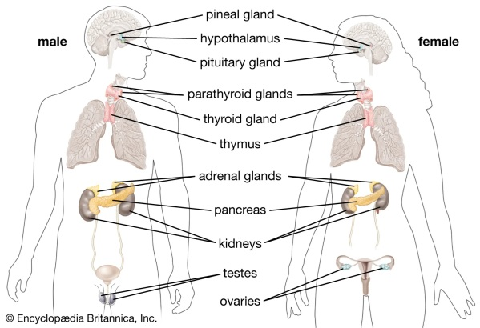Source: Encyclopedia Britannica - endocrine system
The Endocrine system is the system of glands that produce hormones responsible for a variety of functions such as cell growth, metabolism, and many other functions. The endocrine system is comprised of many different organs, most of which are unconnected to the other. The major organs of the Endocrine system include: the pituitary gland and pineal gland, the thyroid and parathyroid glands, thymus, adrenal glands, pancreas, ovaries, and testes. Thus endocrine cancer is any cancer that impacts cells which release hormones.
What are Endocrine cancers and what are the common types?
Endocrine tumors can be broken down into two types: functioning and non functioning. Functioning tumors are endocrine tumors that produce excessive amounts of a hormone, while non-functioning tumors are endocrine tumors that do not produce any hormone. Both of these types of tumors end up disrupting body function, though each in a different way. The most common type of endocrine cancer is in the Thyroid, with around 64,000 people diagnosed with Thyroid cancer in the US annually. There are other forms of primary endocrine cancer, such as adrenocortical cancer (in the adrenal glands), parathyroid carcinoma, and others, though these are all quite rare. Fortunately, Thyroid cancer and most other endocrine cancers are quite treatable, and often involve surgery to remove the cancerous gland.
What are the symptoms of endocrine cancer?
Unfortunately, there are not many obvious early stage symptoms of endocrine cancer. However, because endocrine cancers disrupt the functions of endocrine glands in some way, many of the symptoms associated with endocrine cancer are a distortion of normal endocrine function. For example, the adrenal gland is a small gland that rests on top of the kidneys. One of the many functions of the adrenal gland is to release cortisol; the ‘stress’ hormone that in high concentrations can increase body fat, facial swelling, and blood pressure. Accordingly, the most common symptoms of primary adrenal cancer include: high blood pressure, unexplainable weight gain, facial swelling, and excess sweating. However, as previously mentioned, these symptoms are often minimal if present at all during early stages.
What can be done to prevent endocrine cancer?
Despite the lack of symptoms in many early stage endocrine cancers, there is still something that can be done to reduce the chances of endocrine cancer mortality: bloodwork. Staying on top of your bloodwork with routine hormone measurements (like TSH, or thyroid stimulating hormone) through your primary care provider or other medical provider is paramount to ensuring a swift detection and elimination of endocrine cancer. If routine bloodwork is not affordable, be sure to check out our “Screening and Diagnosis” section for free screenings.
Cardiovascular System
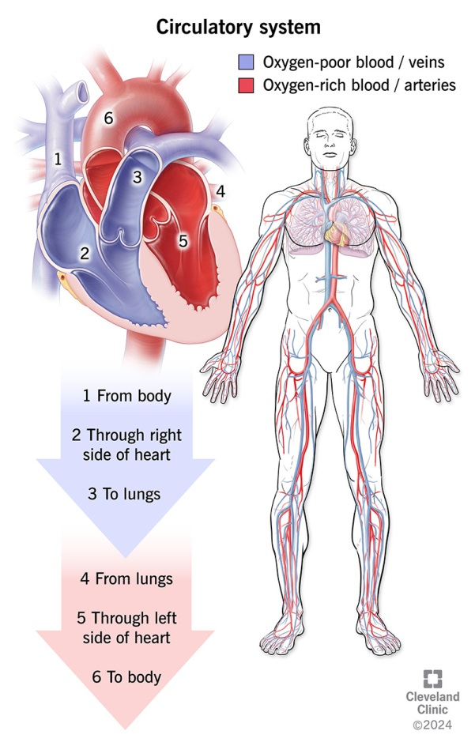The cardiovascular system is the organ system responsible for pumping blood throughout the body. The cardiovascular system consists of the heart, blood vessels, and blood. There are two main types of blood vessels: arteries and veins. Arteries are thick blood vessels buried deep within the body that pump oxygenated blood to the body. After the blood has lost its oxygen, veins collect the blood and pump it back to the lungs for oxygenation.
What are cardiovascular cancers and what are the common types?
The heart pumps nonstop throughout the entirety of your life. Despite this constant motion, the heart does not get damaged, and thus does not need to replicate its cells. Thus, primary cancers that originate within the heart are incredibly rare. On the other hand, blood vessels are more likely to be cancerous. The most common form of blood vessel cancer is the Angiosarcoma; a rare and aggressive form of cancer that originates in the endothelial layer (cell layer on the inside of the blood vessel) of blood or lymphatic vessels. These angiosarcomas can originate anywhere in the body, as blood vessels line every part of the body. However, the most common places an angiosarcoma will occur is on / in the skin, breast, liver, and spleen.
What are the symptoms of cardiovascular cancers?
When on/in the skin, an angiosarcoma looks like a red or purple patch of skin that may be swollen, similar to a bruise. When not visible, pain in the affected area is the prevailing symptom, with tiredness, unexplainable weight loss, and malaise (feeling uneasy or unwell with no identifiable cause) often accompanying the pain. Other than angiosarcomas, heart arrhythmia, shortness of breath, and chest pain are often symptoms of other, less common forms of cardiovascular cancer.
What can be done to prevent cardiovascular cancer?
In order to minimize the risk of cardiovascular cancer, you must minimize the damage to cardiovascular tissues. Elevated blood pressure (hypertension), high cholesterol, smoking, drinking, physical inactivity, and obesity are all contributors to cardiovascular cancer. You may have noticed that, in addition to increasing the risk of cardiovascular cancer, these behaviors also contribute to other forms of cardiovascular disease. Essentially, the best thing that you can do to prevent cardiovascular cancer is to promote cardiovascular health by maintaining healthy habits, such as: an active lifestyle, a balanced diet, and reducing smoking / drinking. By doing this, you’re not only reducing your chances of cardiovascular cancer, but also reducing your chances of cardiovascular disease in general.
Skin
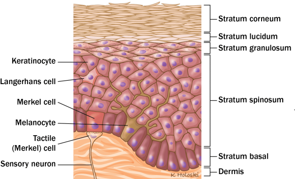The skin is the largest organ in the body, and consists of multiple live and static layers. The skin can be divided into the following layers: the epidermis, the dermis, and the hypodermis (a.k.a the subcutaneous tissue). The epidermis is the top layer of the skin, where cells fuse themselves together to create a waterproof barrier. The dermis is the largest chunk of the skin, and contains nerves, blood vessels, sweat glands, and hair follicles. Finally, the hypodermis is a fatty layer of tissue that anchors the skin to the rest of the body while also serving as a fat depository, cushioning the body.
The most common types of skin cancer emerge from the epidermis. The surface of the epidermis is made of dead cells, but the lowermost part of the epidermis is made of rapidly dividing cells. When they divide, these cells push up other cells in order to regenerate the skin. There are a few important cells in the epidermis related to cancer: keratinocytes, melanocytes, and merkel cells. Keratinocytes are the keratin producing cells that eventually become the outermost layer of the skin. Melanocytes are the large, branching cells that produce melanoma, the pigment involved in skin color. Finally, Merkel cells are larger cells located in the lowest layer of the epidermis, and are involved in activating nerve cells.
What is skin cancer and what are the common types?
There are two different types of skin cancer: Non-Melanoma Skin Cancers, and Melanoma Skin Cancers. Melanoma is the type of skin cancer that arises from melanocytes, the pigment producing cells in the epidermis. Melanoma Skin Cancers are the most aggressive, though most rare, of the two types of skin cancers. In Melanoma, melanocytes begin to rapidly divide and will often spread to other organs if not treated. Non-Melanoma Skin cancers are most commonly one of two cancers: Basal cell carcinoma and Squamous cell carcinoma. These two cancers are made up of the previously mentioned keratinocytes, the cells that become actual skin cells, though they differ in the location of origin. Basal cell carcinomas originate from the Stratum Basale, the deepest part of the epidermis where keratinocytes divide. Squamous cell carcinomas emerge from the Stratum Spinosum, where keratinocytes prepare to fuse and die.
What are the symptoms of skin cancer?
An important acronym used by Moffitt Cancer Center and many other notable institutions is the “ABCDEs of skin cancer.”
- Asymmetrical – if you draw a line through a mole and the two halves are uneven.
- Border – skin cancers often have jagged, crumbly looking edges.
- Color – moles should be a uniform color, but skin cancers often have different colors or shades within the same mole/lesion.
- Diameter – skin cancers, melanoma particularly, are often larger than a pencil eraser in size. Essentially, any mole with a width of 6mm (¼ inch) may indicate cancer.
- Evolving – if a mole changes in size, shape, color, texture (e.g become scaly / scabby) or begins to bleed. Essentially, if something changes about the mole, it could indicate skin cancer.
What can be done to prevent skin cancer?
By far the best way to prevent skin cancer is by using sunscreen. While it is true that those with fairer skin generally get skin cancer more, anyone of any skin complexion can get skin cancer. Most often, skin cancer results from excess exposure to the sun.
The sun emits high energy beams that are incredibly useful for our biology. For example, ultraviolet radiation from the sun is used to synthesize vitamin D. However, these ultraviolet rays can also cause damage to the DNA of cells, particularly that of skin cells. The more exposure one has to the sun, the more likely they are to get skin cancer.
While it is impossible to prevent cell damage from the sun’s rays, it can be reduced. The best way to do this is by using sunscreen on any area that is going to be exposed to the sun for a long period of time. Sunscreen acts as a barrier to ultraviolet rays, similar to how lead vests are used to absorb radiation when getting an X-ray.
Bone, muscle, and soft tissue sarcomas
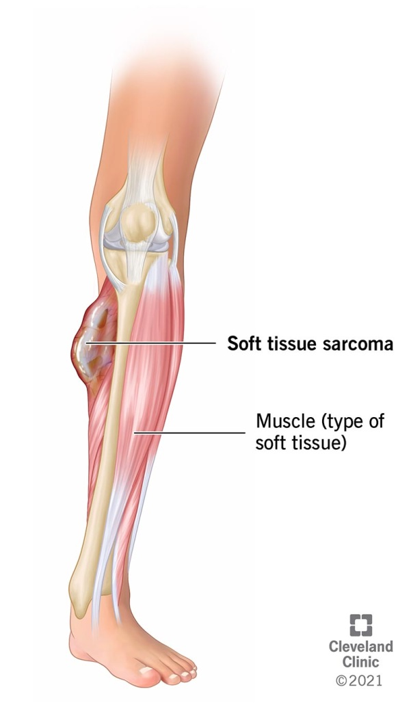Sarcomas are a rare type of cancer that can develop in bones, muscle, connective tissues, and other soft tissues. Because of this, sarcomas don’t necessarily impact a specific organ system, and can appear in a variety of locations. Because of the variation inherently associated with sarcomas, classifying the symptoms of sarcomas as a whole can be difficult. However, there are some general symptoms to look out for, which include:
- Swelling
- Feeling an unusual lump
- Redness
- Pain in the affected area (may not always be present)
- Limited range of motion in a joint
Because Sarcomas can vary so much, there is no one way to keep yourself from getting a sarcoma. However, incorporating healthy habits like physical activity and balanced nutrition while also reducing unhealthy habits like smoking and drinking is a sure-fire way to reduce your risk for any kind of cancer, including sarcomas.
Hematologic (Blood Cancers)
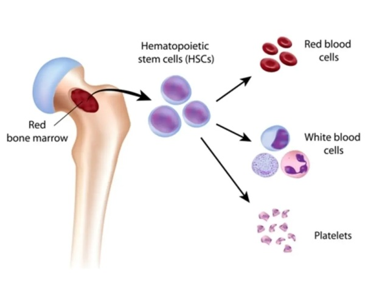Hematologic cancers are cancers born from cells that reside within the blood, most of which are produced or reside within the bone marrow and lymphatic system. The bone marrow is responsible for producing the cells within the blood, including red blood cells (erythrocytes), white blood cells (leukocytes), platelets (cells that help your blood clot), and other blood cells. Red blood cells produced in the bone marrow go into the cardiovascular system, where they deliver oxygen to your cells. On the other hand, the white blood cells go into the lymphatic system; a series of vessels and nodes that white blood cells use for transport.
What are Hematologic cancers and what are the common types?
Hematologic cancers can be divided into three groups: leukemia, lymphoma, and multiple myeloma. Leukemia is cancer born from leukocytes, or white blood cells. Leukemia can be broken down into many separate types, but can be generally classified as acute (fast growing) or chronic (slow growing).
Lymphoma is cancer born from the lymphatic system, specifically cells called Lymphocytes. While Lymphoma and Leukemia originate from lymphocytes, they remain separate cancers because of their place of origin, as Leukemia originates in the bone marrow while Lymphoma originates in the lymph nodes. Lymphoma can be classified into two types: Hodgkin’s and Non-Hodgkin’s Lymphoma, with the main difference between the two being the presence or absence of abnormal lymphocytes called Reed-Sternberg cells. Hodgkin’s Lymphomas are more common in those under 55 years of age, and tend to have higher survival rates. Non-Hodgkin’s Lymphomas are more common in those 55 years or older and have a wider variety of disease modalities than HL.
Finally, Multiple Myeloma is a cancer within the bone marrow. Specifically, Multiple Myeloma is made of mutant plasma cells, which are B-Cells (a type of lymphocyte) that have been activated by the immune system and produce antibodies.
What are the symptoms of Hematologic cancers?
The most common symptoms of Hematologic cancers include: frequent infections, fever, swollen/tender lymph nodes, bone pain, night sweats, fatigue, or unexplained weight loss. It is important to note that these symptoms are quite similar to an infection. However, if these symptoms persist past 2-4 weeks, consult a physician for testing.
What does treatment look like for Hematologic cancers?
Due to their complexity, Hematologic cancers have a wide variety of treatment options. For example, chemotherapy, stem cell transplant (a.k.a bone marrow transplant), immunotherapy, and radiation are often used in conjunction with each other to treat Hematologic cancers.
What can be done to prevent Hematologic cancers?
In order to minimize your chances of developing Hematologic cancer, one should maintain an active, healthy lifestyle. Additionally, minimize behaviors like smoking or drinking, and try your best to avoid unnecessary radiation and carcinogenic compounds. For a more comprehensive list on carcinogens linked to Hematologic cancers, use the link below: https://www.mylymphomateam.com/resources/chemicals-that-raise-lymphoma-risk-paint-thinners-pesticides-and-more
Additionally, genetics play a significant factor in one’s likelihood of developing Hematologic cancer. If any of your relatives have had Hematologic cancer, you are more likely to get Hematologic cancer yourself. If this is a concern, genetic counseling / screening will allow you to understand your personal risks when it comes to developing Hematologic cancers.
Renal System (Kidneys)
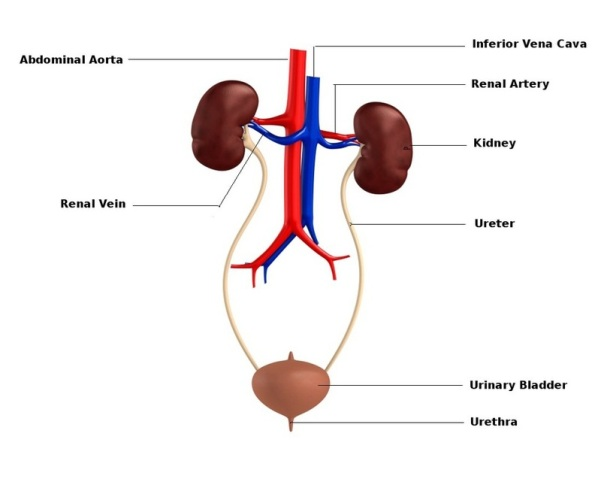The Renal system is the organ system involved in filtering the blood. The Renal system contains the Kidneys, Ureters, Bladder, and Urethra. The Kidneys are the primary organs involved in filtering the blood. The Kidneys are bean shaped, fist sized organs that sit at the back side of the body under the ribs. The Kidneys contain millions of Nephrons, miniscule filters that filter the blood and produce urine.
The Ureters are the tubes that connect the kidney and bladder. Essentially, they deliver the urine produced by the kidneys to the bladder, where it stores and monitors urine levels. When urine levels get high, the bladder stretches and sends signals to the brain that you have to pee. Finally, the urethra is the tube that connects the bladder to the outside world, and is the orifice in which urine leaves the body.
What are Renal Cancers and what are the most common types?
Renal cancer is any type of cancer that emerges from cells found within the Kidneys, Ureter, Bladder, and Urethra. The most common type of renal system cancer is Renal Cell Carcinoma, which comes from cells that line the nephrons (little filters of the kidney), and accounts for about 90% of all Renal System cancers. The majority of ureter, bladder, and urethral cancers are Transitional Cell Carcinoma (TCC), also called urothelial carcinoma. This cancer comes from cells that line the inside of the ureters, bladder, and urethra. Another cancer to be aware of, particularly if you have sickle cell anemia, is Renal Medullary Carcinoma, a rare and aggressive cancer of the kidney. On its own, this cancer is quite rare. However, Sickle Cell Anemia drastically increases the chances of getting Renal Medullary Carcinoma.
What are the symptoms of Renal Systom Cancer?
The most notable symptoms of Renal System Cancer include:
- Blood in urine
- Frequent urination
- Pain in the back underneath the ribs (especially kidney pain) for multiple weeks
- A palpable lump in the back
- Weak urine stream
- Fatigue
- Loss of appetite
- Unexplained weight loss
Male Reproductive System
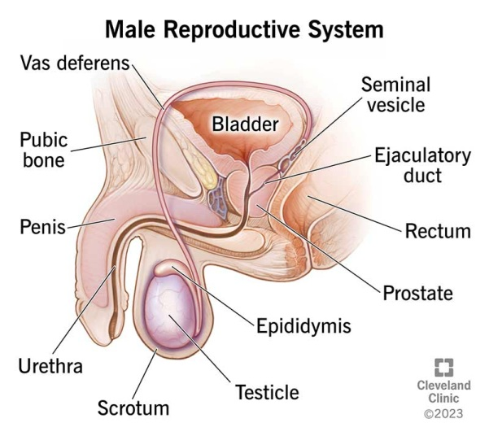The male reproductive system is the system of organs that is responsible for facilitating reproduction, and includes both external and internal organs, such as the: penis, testes, scrotum, prostate, vas deferens, and urethra. (Note that the urethra was addressed in the renal system section, so it will not be addressed here). The testes are the organs responsible for producing sperm, and produce around 200 million sperm cells per day in the average male. These sperm cells are contained within a fluid called semen. Semen itself is made up of many different fluids / cells, such as prostatic fluid, fluid produced by the prostate gland that protects and nourishes sperm cells. During intercourse, semen will travel up the vas deferens and release from the urethra.
What is Male Reproductive Cancer and what are the common types?
Any cancer of the prostate, penis, testes, urethra, and scrotum could be considered Male reproductive cancer. The most common type of Male Reproductive Cancer is prostate cancer, followed by testicular cancer, followed by penile cancer. The most common type of prostate cancer is adenocarcinoma, or cancer of glandular structures. Prostate adenocarcinoma affects the cells that are responsible for secreting various substances, such as the previously mentioned prostatic fluid.
Testicular cancer can be defined as seminomas and nonseminomas, each of which appear at about an equal rate. Seminomas tend to be more treatable than nonseminomas, as they generally grow slower and respond better to treatment. The most common type of seminomas is the classic seminoma, accounting for about 95% of all seminoma cases. The most common types of nonseminomas include embryonal carcinoma and yolk sac carcinoma.
Finally, the most common types of penile cancers present as warty, red, or flaky lumps on the skin of the penis. While some soft tissues sarcomas can originate within the muscles and blood vessels of the penis, they are extremely rare. The most common type of penile cancer is squamous cell carcinoma, accounting for about 95% of all penile cancers. Squamous cell carcinoma is a type of skin cancer that develops from keratinocytes, the primary cell that makes up the skin.
What are the symptoms of male reproductive system cancer?
Generally, the symptoms of prostate cancer relate to urination, the symptoms of testicular cancer relate to swelling and heaviness of the testes / scrotum, and the symptoms of penile cancer relate to the surface of the penis. In total, the most common symptoms of Male Reproductive Cancer include:
- Difficulty urinating
- Weak urine stream
- Frequent urination
- Pain when urinating
- Blood in urine
- Blood in semen
- Erectile dysfunction
- Swelling in one or both testicles
- Painless lump on testicle
- Pain in the lower abdomen/groin
- A lump or sore on the penis
- Changes in the color of the skin of the penis
What can be done to prevent male reproductive system cancer?
The major risk factors for male reproductive cancer include: HPV infection, HIV infection and AIDS, Cryptorchidism (a.k.a undescended testicle), STIs, poor hygiene, consuming tobacco products, family history, age, and poor diet. The risks of developing prostate cancer increases significantly after age 50. Additionally, one’s chances of developing prostate cancer increase significantly if you have close family members who have also developed prostate cancer. Age and family history are not factors one can control, but they are important to note in order to assess your personal risks of getting prostate cancer. Additionally, if you are over the age of 50, or have family members who have also had prostate cancer, you may be eligible for free or reduced cost prostate cancer screenings! Find more information about free / low cost prostate cancer screenings here.
Knowing this, the best thing you can do to prevent prostate cancer is vaccinating against HPV, practicing safe sex to prevent STIs, reducing tobacco consumption, and maintaining a well balanced diet.
Female Reproductive System
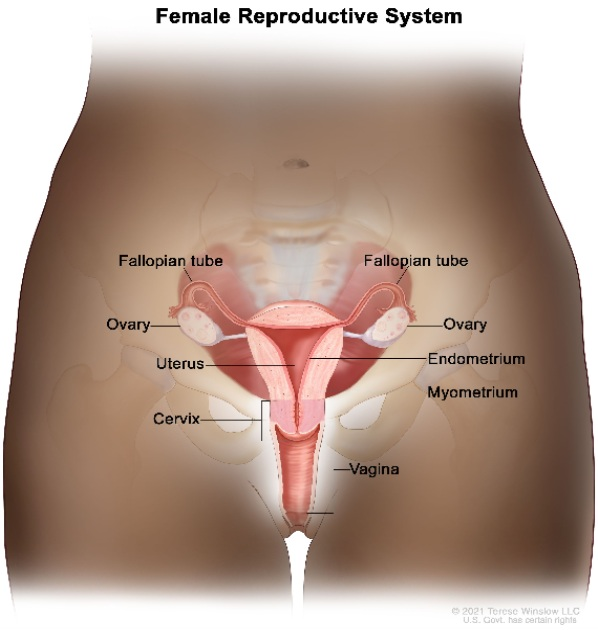Source: Terese Winslow, National Cancer Institute
The Female Reproductive System is the organ system dedicated to facilitating intercourse and growing children. The Female Reproductive System consists of the vulva, the vagina / vaginal canal, the cervix, the uterus, the uterine tubes (a.k.a the fallopian tubes), and the ovaries. The only visible part of the female reproductive system is the vulva. The vagina is a muscular tube that connects the cervix to the vulva. The cervix is an incredibly muscular ring-like structure that acts as the ‘gate’ to the uterus, preventing anything from entering or leaving the uterus. The uterus is the roughly fist sized organ that houses a child during pregnancy. The uterus is made of three parts, the endometrium, the myometrium, and the perimetrium. The perimetrium is the outermost layer of the uterus and protects the uterus by anchoring it to the pelvic floor and reducing friction with other organs. The myometrium is the layer of smooth muscle within the uterus, and is responsible for the contractions within menstruation and labor. Finally, the endometrium is the inner lining of the uterus that thickens with a woman's menstrual cycle, nourishing a fertilized egg if present, or falling off if no egg is present. The ovaries are reproductive glands that release an egg (ova) once a month in a process called ovulation. The ovaries are also responsible for releasing estrogen and progesterone, two vital hormones that, among many other tasks, establish and protect the endometrium. The ovaries are connected to the uterus by the uterine tubes.
What is female reproductive cancer and what are the common types?
Female reproductive cancer is any type of cancer that impacts the vulva, the vagina, the cervix, the uterus, the uterine tubes, or the ovaries. Most commonly, cancer of the female reproductive system originates in the endometrium, ovaries, and cervix, with vaginal and vulvar cancers being less common.
Endometrial cancer is the most common type of female reproductive system cancer, and can come in two types: Type I and Type II. Type I endometrial cancers are the most common type of endometrial cancer. Type I endometrial cancers are driven by prolonged exposure to estrogen. Type I endometrial cancer is generally slower growing and less likely to spread than Type II endometrial cancers. Type II endometrial cancers are rarer than Type I, and are generally not influenced by estrogen. Type II endometrial cancers have a less favorable prognosis, as they are often higher grade (meaning they grow and spread faster).
The next most common type of female reproductive cancer is cervical cancer. The majority of cervical cancer is Squamous Cell Carcinoma, cancer that originates from the flat cells that line the cervix, and makes up about 85% of all cervical cancer incidence. Adenocarcinoma, which is made of cells that secrete mucus, makes up the rest of the incidence, accounting for about 15% of all cervical cancer incidence.
Ovarian cancer is the next most common type of female reproductive cancer. The most common type of ovarian cancer is Epithelial Ovarian Cancer, which accounts for about 90% of cases. Epithelial Ovarian Cancer also includes primary uterine tube cancer, which is a type of Epithelial Ovarian Cancer.
What are the symptoms of Female Reproductive Cancer?
Generally, the symptoms of Female Reproductive Cancer relate to abnormal discharge/bleeding and abnormal pain in the lower abdomen. The most common symptoms of Female Reproductive System Cancer include:
- Abnormal vaginal bleeding (bleeding between periods or after menopause)
- Heavier periods than usual
- Abnormal vaginal discharge (persistent watery, bloody, or unusually smelly discharge)
- Bloating
- Persistent pelvic pain
- Persistent lower abdomen pain
- Constipation
- Urinary incontinence
- Increased urgency to urinate
- Fatigue
- Loss of appetite
What can be done to prevent Female Reproductive Cancer?
The biggest risk factors for developing Female Reproductive cancer include having an HPV infection, oral contraceptive pills (only for cervical cancer - birth control pills may actually help prevent ovarian cancer!), consumption of tobacco products, obesity, family history of cervical / ovarian / endometrial cancer, age, and menopause therapy (also known as Hormone Replacement Therapy). Much like male reproductive system cancer, the risk of female reproductive cancer increases with age. Additionally, having a family history of female reproductive system cancer increases your chances of developing the same cancer. While none of this is something you can control, they are important to note in order to assess your personal risks of getting any of these cancers. Additionally, if you are over the age of 50, or have family members who have had cervical cancer, you may be eligible for free or reduced cost cervical cancer screenings! Find more information about free / low cost cervical cancer screenings here.
Knowing all of this, the best way to prevent cancer of the reproductive system is vaccinating against HPV, practicing safe sex to reduce STIs, decreasing personal consumption of tobacco products, and maintaining an active lifestyle with balanced nutrition.
Head and Neck Cancers

Source: Macmillan Cancer Support
The Head and Neck region of the body includes anything around the head and throat area, excluding the brain, spine, and eyes. This includes areas such as the mouth, sinuses, nasal cavity, pharynx (throat) or larynx (voice box), parotid glands (salivary glands), tonsils, and skin.
What is Head and Neck Cancer and what are the common types?
Head and Neck cancers are any cancer that develop within the head and throat region, excluding brain, spine, and eye malignancies. Head and Neck cancers originate in the mouth, sinuses, nasal cavity, pharynx (throat) or larynx (voice box), parotid glands (salivary glands), tonsils, and skin.
The most common cancer found within the Head and Neck is Oropharyngeal cancer, in which a tumor grows in the oropharynx, or middle of the throat. The majority of Oropharyngeal cancers originate from Squamous cells (thin cells that line the mucous membranes of the head and neck). Speaking of which, Squamous Cell Carcinoma is by far the most common Head and Neck cancer type, and accounts for upwards of 90% of all Head and Neck cancer incidence. Head and Neck Squamous Cell Carcinoma is a cancer that originates from Squamous cells that line the sinuses, nasal cavity, and throat.
However, Head and Neck cancers are not exclusively Squamous cell carcinomas. There is a wide variety of other cancer types, such as lymphomas, melanomas, and sarcomas, that can impact the head and neck region.
What are the symptoms of Head and Neck cancer?
The most common symptoms of Head and Neck cancer relate to the appearance or function of the head and neck region. The most common symptoms of Head and Neck cancer include:
- Persistent difficulty swallowing
- Persistent sore throa
- Repeat nosebleeds
- Repeat sinus infections
- A palpable lump on the head or neck
- Changes in voice
- Difficulty speaking or breathing
- Pain in the head, neck, or ear
What can be done to prevent Head and Neck cancers?
The most significant risk factors relating to Head and Neck cancers include: alcohol consumption, tobacco consumption, Human Papillomavirus (HPV) infection, and sun exposure. Notably, tobacco products like dip dramatically increase your likelihood of oral cancers. Thus, in order to best reduce your chances of getting head and neck cancer, it is recommended to reduce alcohol consumption as much as possible, reduce tobacco product consumption as much as possible, vaccinate against HPV, and wear as much sunscreen as possible (especially on the lips).